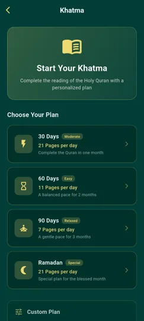
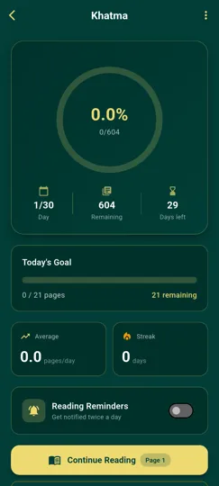
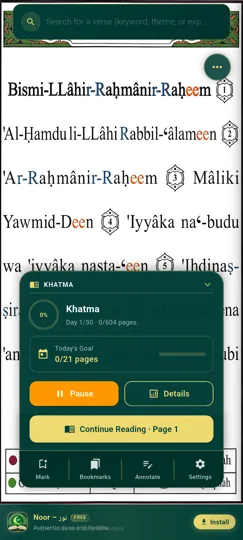

Qu'est-ce qu'une Khatma ?
La Khatma désigne la lecture complète du Coran, du début (Al-Fatiha) à la fin (An-Nas). De nombreux musulmans réalisent une Khatma pendant le mois de Ramadan, mais elle peut aussi être entreprise à n'importe quel moment de l'année, sur la durée de votre choix.
Terminer le Coran demande de la constance : sans plan de lecture ni suivi, il est facile de perdre le fil ou d'abandonner en cours de route. C'est exactement ce que résout la fonctionnalité Khatma de Noor Phonetic Quran.
Comment fonctionne la Khatma dans l'application ?
- Choisissez la durée de votre Khatma — par exemple 30 jours pour le Ramadan, ou une durée personnalisée adaptée à votre rythme.
- Suivez votre objectif quotidien — l'application calcule automatiquement le nombre de pages à lire chaque jour pour terminer dans les temps.
- Gardez votre série de lecture (streak) — chaque jour où vous atteignez votre objectif prolonge votre streak, une motivation supplémentaire pour rester régulier.
- Recevez des rappels — des notifications vous aident à ne pas oublier votre lecture du jour.
- Célébrez la fin de votre Khatma — un récapitulatif de votre parcours (jours pris, meilleur streak) s'affiche une fois le Coran terminé.
Aperçu de la fonctionnalité Khatma



Questions fréquentes sur la Khatma
Que se passe-t-il si je manque un jour de lecture ?
L'application ajuste votre progression pour vous permettre de rattraper votre retard et terminer votre Khatma dans les temps.
Puis-je faire une Khatma en dehors du Ramadan ?
Oui, vous pouvez démarrer une Khatma à tout moment de l'année, avec la durée de votre choix.
La fonctionnalité Khatma est-elle gratuite ?
Oui, comme l'ensemble des fonctionnalités principales de Noor Phonetic Quran, la Khatma est entièrement gratuite.